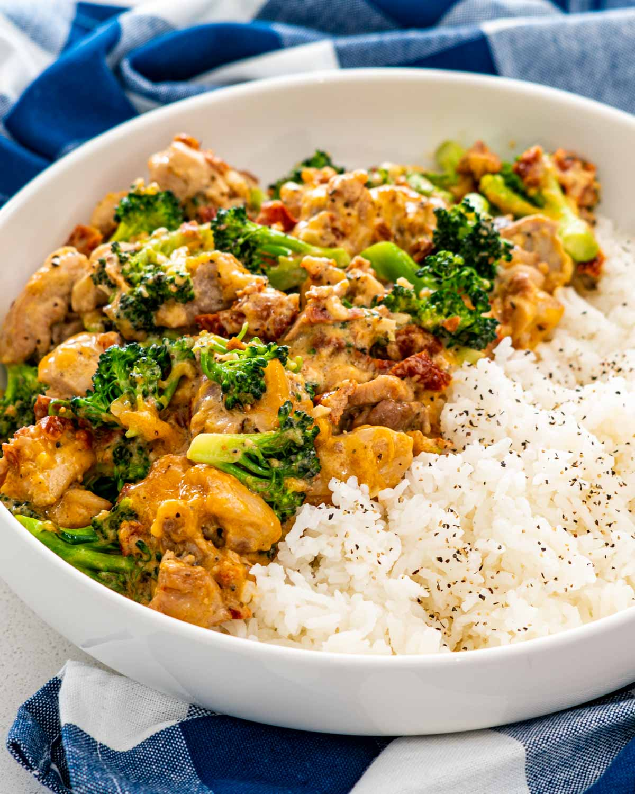

I have this at least 4 times a week!

Might sound dry but just add some sauce!
Ingredients:
- Chicken thighs
- Broccoli
- Rice of your choice
- Rinse rice etc... You know how to cook rice, right?
- Heat up a frying pan to high heat, add fat of choice, fry chicken thighs until cooked through
- Cook broccoli for maybe 5 minutes?
- Add sauce of choice. Mixing regular mayonnaise with sweet chilli sauce is pretty tasty btw..